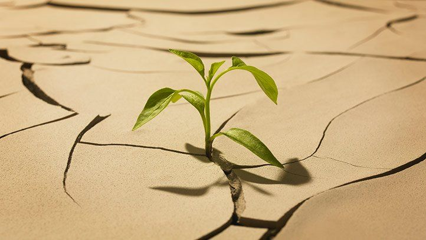
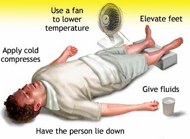
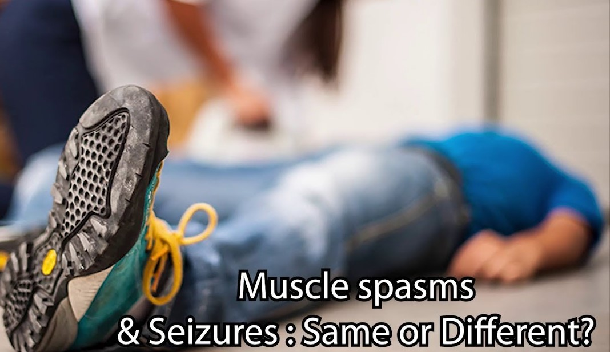
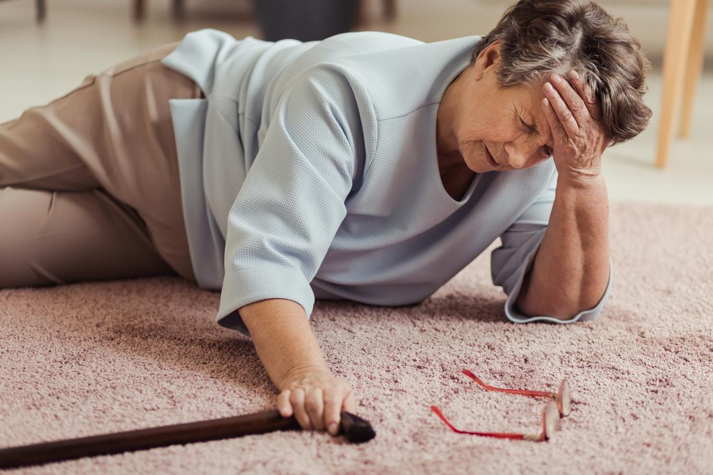
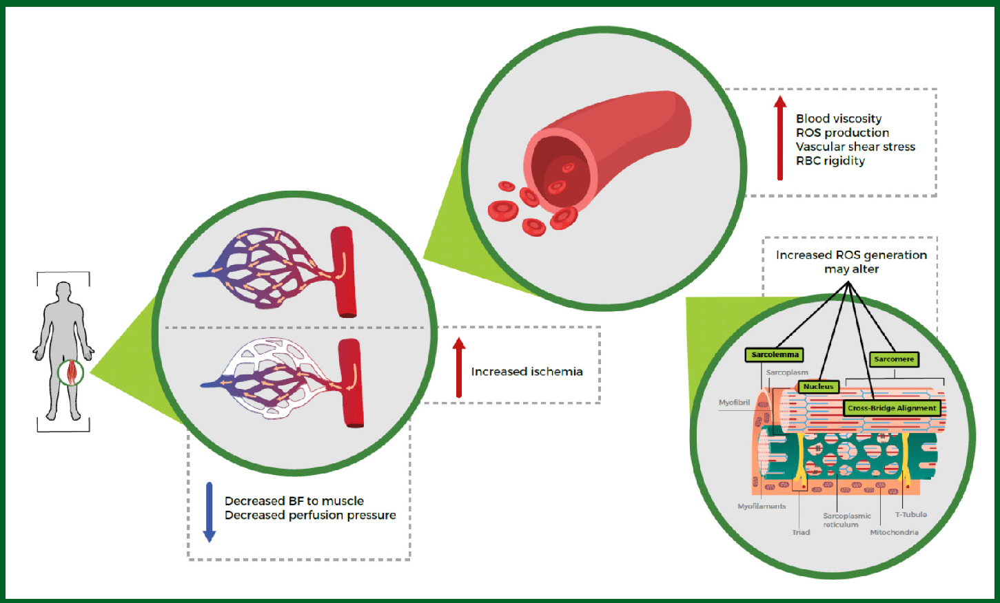
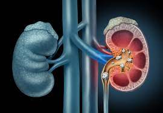
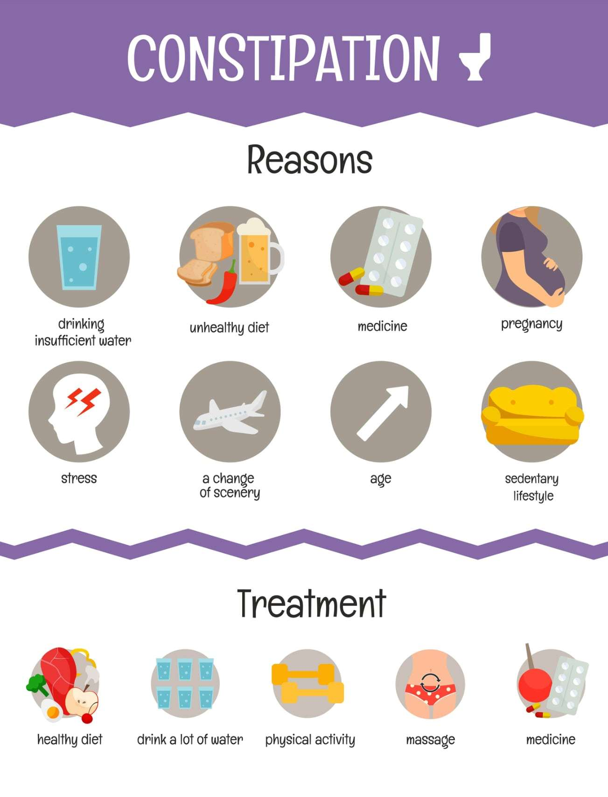

Water makes up up to 60% of the human adult body, which we always take for granted before we lose enough to suffer dehydration symptoms
including excessive hunger, light-headedness, lethargy, headaches, and muscle cramps. You already know what it feels like if you've ever overdone
it on a hot day.
Dehydration, on the other hand, is literally because the body loses more blood and electrolytes (such as sodium, potassium, and chloride) than it takes in,
impairing the body's capacity to control temperature and function normally. Sweating, vomiting, diarrhea, urinating heavily, and getting a fever are all ways to lose blood.
Overexertion, overheating, sickness, and chronic health problems like untreated diabetes are all common causes of dehydration. Excessive alcohol use and the use of some drugs will also cause fluid loss.
Can Moderate to Severe Dehydration Put Your Health at Risk?
According to Dr. Arkun, you will lose 3 to 4% of your fluid volume without experiencing any symptoms. Following that, you'll enter what medical practitioners refer to as the three stages of dehydration, the second of which may be fatal.
Mild (5–6 Percent of Body Fluid Lost)
At this stage, Arkun says, symptoms start to show up. You begin to feel tired, dizzy, and get headaches. It's possible if you have a dry mouth. Typically, rehydrating with clear water or a sports drink is sufficient.
Moderate (7–10 Percent)
You may also have low blood pressure and a faster-than-normal heartbeat at this stage. Your urine production may be severely limited, and you may have dry skin that tents instead of springing up when you pinch it. Rehydrate as soon as possible with a fluid that replenishes electrolytes, such as sports drink, or water if that's all that's accessible.
Severe (Over 10 Percent)
According to Arkun, severe dehydration may be fatal. Fainting and seizures can happen as a result of electrolyte imbalances. If you fall into this group, you can get medical help right away. Intravenous hydration of water and sodium chloride can be administered by a medical professional. Dehydration can be life-threatening if your fluid volume loss exceeds 15% to 25% of your total body weight.
Can Dehydration Lead to Overheating?
Heat illness is one of the most common health complications associated with dehydration (the heat being your core temperature, not the heat outside). It often occurs in conjunction with dehydration, particularly in hot weather. This is because a decrease in fluid volume will impair the body's ability to stay calm, and a rise in body temperature will lead to much more fluid loss.
Heat Exhaustion
Our skin becomes very hot, dry and red. Your body is unable to cool itself down. You can become unconscious, have seizures, and actual vomiting.
Excessive thirst, nausea, and a headache are also symptoms of heat exhaustion. During this time, your core body temperature will reach 104 degrees Fahrenheit. To get a person's temperature down, they should be taken to a cool spot, fanned with fresh air, or have ice added to their skin. Offer them water and get emergency help as soon as possible if they're awake.
Heat exhaustion will lead to heat stroke if left untreated. If any of the following happens, get medical help right away: The signs and symptoms are serious. The survivor suffers from heart disease or elevated blood pressure.
| Blood Pressure Category | SYSTOLIC mm Hg (upper number) |
DIASTOLIC mm Hg (lower number) |
|
|---|---|---|---|
| NORMAL | LESS THAN 120 | and | LESS THAN 80 |
| ELEVATED | 120 - 129 | and | LESS THAN 80 |
| HIGH BLOOD PRESSURE (STAGE 1) |
130 - 139 | or | 80 - 89 |
| HIGH BLOOD PRESSURE (STAGE 2) |
140 or HIGHER | or | 90 or HIGHER |
| HYPERTENSIVE CRISIS | HIGHER than 180 | and/or | HIGHER than 120 |
Heatstroke
With heat stroke your core body temperature can rise it to 105 degrees F and you actually start damaging cells, your heart muscle, brain, and lungs. Your internal organs start to become damaged. A person in this stage can slip into a coma. A call to 911 is in order for anyone suffering from heatstroke. While you're waiting for emergency services to arrive, immerse a person with heatstroke in an ice bath or apply ice packs to the arms, neck, and groin areas. Be sure to remove his or her clothing.
Muscle Spasms and Seizures
As previously stated, a significant reduction of fluid volume will result in an electrolyte deficit, which can trigger muscle spasms and seizures. This is due to the fact that electrolytes like sodium and potassium aid in the transmission of electrical signals between the cells. When such signals are interrupted, involuntary muscle contractions and lack of consciousness may occur.
Hypovolemic Shock
Dehydration will cause your blood flow to drop to the point that your blood pressure drops and you don't get enough oxygen. This life-threatening type of shock occurs when the body loses more than one-fifth of its blood flow. Immediate medical care and intravenous blood transfusions are part of the treatment. Oral fluids should not be administered to anyone with this condition.
This form of low blood pressure is caused by a lack of fluid flow, and it occurs when a patient stands up unexpectedly and dramatically. When this happens, you can feel faint, dizzy, or light-headed. Those effects may be relieved by sitting or lying down. The solution is to drink plenty of water.
Muscle Damage
According to Coupe, if dehydration contributes to heat exhaustion, the result may be short-term muscle harm. (Do you recall any muscle cramps?) Muscle soreness will be there for several days before the body has recovered.
Kidney Stones
Kidney stones can form as a result of repeated bouts of dehydration. Since the nutrients and salts that create the stones are found in your urine, stones are more likely to form as the fluid in your urine falls. It's a hint that your fluid content is too low if your urine is frequently black. Avoiding dehydration can help prevent kidney stones from forming in the first place.
Constipation
Dehydration can cause stiff, dry stools that pass too slowly through your digestive system. To make things move along faster, drink more water and eat more fiber.
If you and your doctor determine that you’re having a tough time staying hydrated, Gupta has this simple advice: “If water is hard to take down and doesn’t taste great to you, drink whatever tastes good — barring something with caffeine or alcohol, which might increase your urination. If Gatorade tastes good, drink that. If lemonade tastes good, drink that. Don’t worry about it, as long as there’s enough fluid intake.”
Of course, if you have a medical condition that can limit your ability to consume sugary drinks, such as diabetes, contact your doctor. Dehydration can be exacerbated by blood sugar levels that are higher than average.